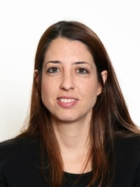

ד"ר טליה שנצר קותיאל
אונקולוגית בכירה
ד"ר טליה שנצר קותיאל הינה רופאה מומחית באונקולוגיה העוסקת בתחום גידולי ריאה ומערכת עיכול באגף האונקולוגי בקריה הרפואית רמב"ם. היא סיימה בהצטיינות לימודי ביולוגיה BSC בטכניון ,לאחר מכן סיימה לימודי רפואה בטכניון והתמחות באונקולוגיה Medical Oncology באגף האונקולוגי רמב"ם בשנת 2020. ד"ר שנצר קותיאל משתתפת בהוראת סטודנטים לרפואה, מרצה בבית ספר לסיעוד על בסיסי ומרצה בבית הספר לרנטגן משנת 2018. חברה באיגוד הישראלי לאונקולוגיה קלינית ורדיותרפיה. במסגרת עבודתה באגף האונקולוגי, ד"ר שנצר קותיאל משתתפת כחוקרת ראשית וכחוקרת משנה במספר רב של מחקרים קליניים עולמיים רב מרכזיים בתחום ריאה, מערכת עיכול ומחקרי פאזה ראשונה.
- אונקולוגית מומחית בתחום סרטן ריאה וגידולי בית חזה. חוות דעת לפני או במהלך טיפול
- התאמת תוכנית טיפולית מיטבית
- המלצות על השתתפות במחקרים קלינים
צור קשר